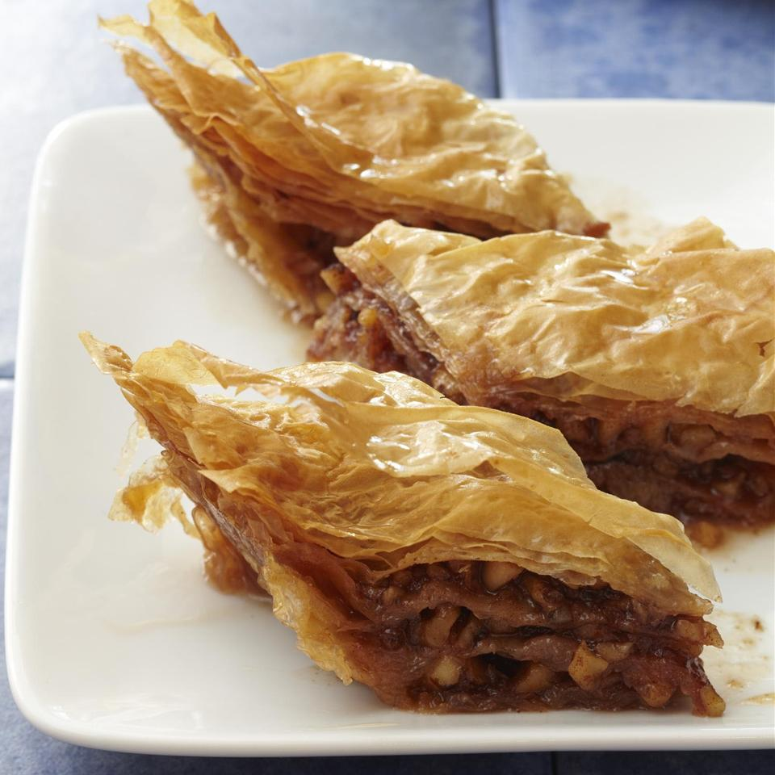

Stolen Baklava Recipe

Describe the Dish!
This recipe was passed from my Yia Yia to her daughter-in-law (my mother) to me. People love this as a Christmas gift. It has gained a big reputation among our friends. One time, my mother donated a small tin of baklava to a church charity auction. It was very competitive, but the price was driven up to $40!
Ingredients
Syrup
- 2 cups water
- 2 cups white sugar
- 4 whole cloves
- ½ cinnamon stick
- 1 lemon, juiced, divided
Filling
- 1 cup white sugar
- 2 tablespoons ground cinnamon
- ½ teaspoon ground nutmeg
- ¾ cup unsalted butter, melted, or more as needed
- 20 sheets phyllo dough
Directions
- Stir together water, 2 cups sugar, cloves, cinnamon stick, and 1/2 the lemon juice together in a saucepan. Bring to a boil, reduce heat to low, and simmer until flavor blends and syrup consistency is reached, about 15 minutes. Stir remaining 1/2 the lemon juice into syrup. Strain and refrigerate until cool, at least 30 minutes.
- Stir walnuts, 1 cup sugar, ground cinnamon, and nutmeg together in a bowl.
- Preheat oven to 350 degrees F (175 degrees C). Brush butter on the bottom and sides of a 9x13-inch glass baking dish.
- Lay the phyllo dough out on a clean, dry surface and cover it with plastic wrap. Cover the plastic wrap with a damp towel.
- Lay 1 sheet of phyllo dough in prepared baking dish and lightly brush with butter. Lay another 1 sheet of phyllo dough on top, brush with butter. Repeat layering and brushing with butter with 4 more sheets of phyllo dough.
- Gently spread 1/3 the walnut mixture in an even layer over the phyllo dough in the baking dish. Place a sheet of phyllo dough over the walnut mixture and brush it with butter. Repeat layering and buttering with 3 more sheets of dough.
- Spread another 1/3 the walnut mixture in an even layer over the phyllo dough in the baking dish. Place a sheet of phyllo dough over the walnut mixture and brush it with butter. Repeat layering and buttering with 3 more sheets of dough.
- Spread the remaining 1/3 walnut mixture in an even layer over the phyllo dough in the baking dish. Place a sheet of phyllo dough over the walnut mixture and brush it with butter. Repeat layering and buttering with the remaining 5 sheets of dough. Cut baklava into 1-inch diamonds.
- Bake in the preheated oven until lightly golden brown, 35 to 45 minutes.
- Pour cooled syrup over baked baklava and cool for 1 day to absorb syrup.